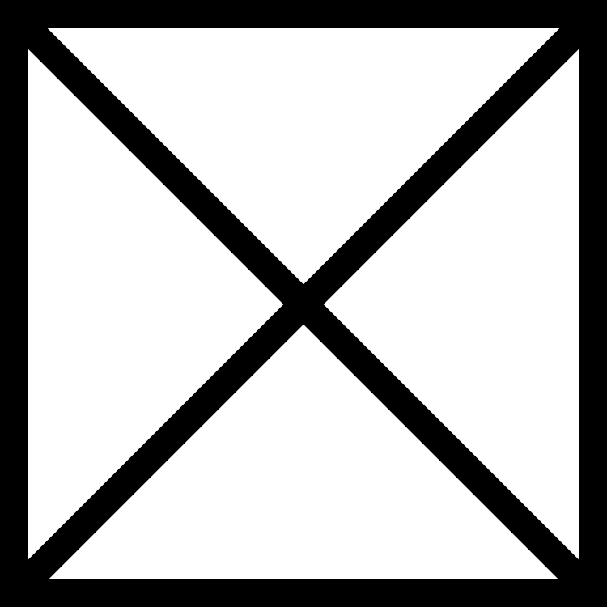

Jan en Freek Kras zijn eigenaren/directeuren van het bedrijf KRAS-design. Dit is een bedrijf waar ontwerpen gemaakt worden voor logo’s, waar huisstijlen worden gemaakt en waar websites worden ontworpen en gehost. Bij KRAS-design werken intussen 18 werknemers.
